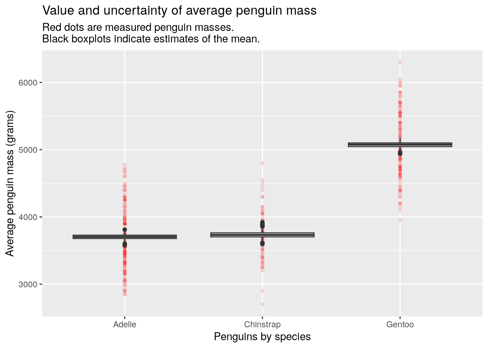
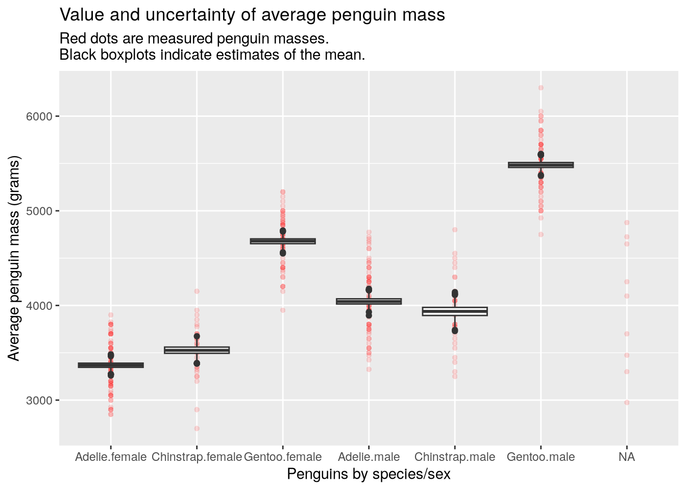
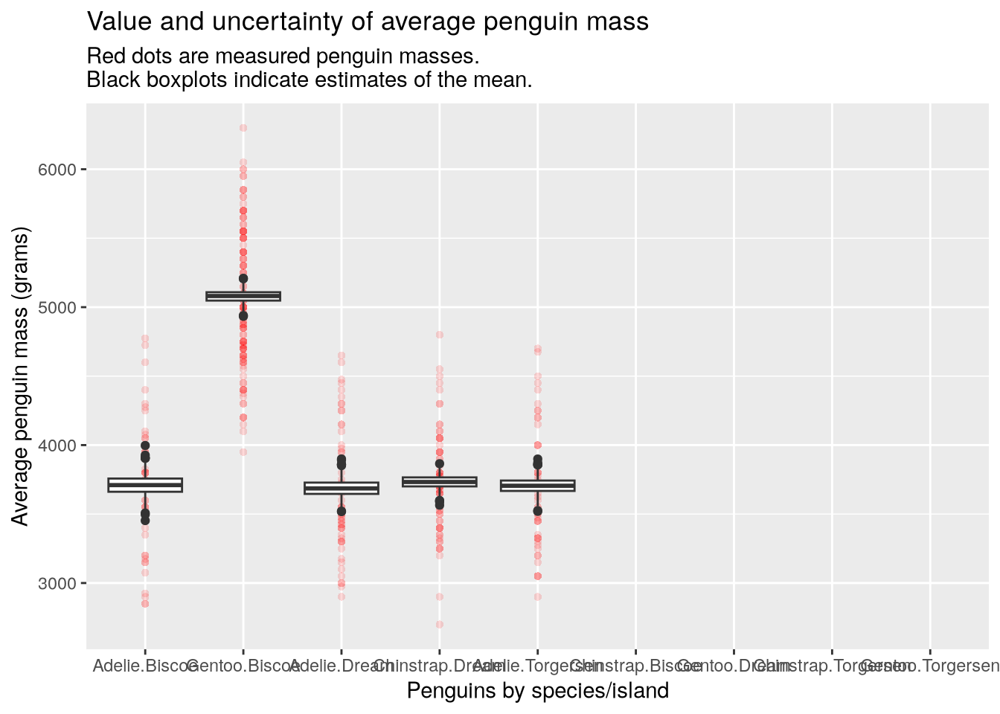

Use R’s conditions system to raise and catch messages, warnings, and errors
Use R’s debugging functions to diagnose bugs in code
Estimate the amount of memory a data set will require
Use the lobstr package to get memory usage for an R object
Describe what a profiler is and why you would use one
Describe what kinds of profiling tools R provides
The major topics of this chapter are how to print output, how R’s conditions system for warnings and errors works, how to use the R debugger, and how to estimate the performance of R code.
7.1 Printing
Perhaps the simplest thing you can do to get a better understanding of some code is make it print out lots of information about what’s happening as it runs. You can use the print function to print values in a way that exposes details important to programmers.
For example, when printing a vector, the function prints the position of the first element on each line in square brackets [ ]:
The print function also prints quotes around strings:
print("Hi")
[1] "Hi"
These features make the print function ideal for printing information when you’re trying to understand some code or diagnose a bug.
7.2 The Conditions System
R’s conditions system provides a way to signal and handle unusual conditions that arise while code runs. With the conditions system, you can make R print status, warning, and error messages that make it easier for users to understand what your code is doing and whether they’re using it as intended. The condition system also makes it possible to safely run code that might cause an error, and respond appropriately in the event that it does. In short, understanding the conditions system will enable you write code that’s easier to use and more robust.
7.2.1 Raising Conditions
The message, warning, and stop functions are the primary ways to raise, or signal, conditions.
The message function is the primary way to print output (see Section 6.2.7 for alternatives). A message provides status information about running code, but does not necessarily indicate that something has gone wrong. You can use messages to print out any information you think might be relevant to users.
The warning function raises a warning. Warnings indicate that something unexpected happened, but that it didn’t stop the code from running. By default, R doesn’t print warnings to the console until code finishes running, which can make it difficult to understand their cause; Section 7.3 explains how to change this setting.
Unnamed arguments to the warning function are concatenated with no separator between them, in the same way as arguments to the message function. For example:
warning("Objects in mirror", " may be closer than they appear.")
Warning: Objects in mirror may be closer than they appear.
Warnings are always printed with Warning: before the message. By default, calling warning from the body of a function also prints the name of the function:
f =function(x, y) {warning("This is a warning!") x + y}f(3, 4)
Warning in f(3, 4): This is a warning!
[1] 7
The name of the function that raised the warning is generally useful information for users that want to correct whatever caused the warning. Occasionally, you might want to disable this behavior, which you can do by setting call. = FALSE:
f =function(x, y) {warning("This is a warning!", call. =FALSE) x + y}f(3, 4)
Warning: This is a warning!
[1] 7
The warning function also has several other parameters that control when and how warnings are displayed.
The stop function raises an error, which indicates that something unexpected happened that prevents the code from running, and immediately stops the evaluation of code. As a result, R prints errors as soon as they’re raised. For instance, in this function, the line x + y never runs:
f =function(x, y) {stop() x + y}f(3, 4)
Error in `f()`:
Like message and warning, the stop function concatenates its unnamed arguments into a message to print:
stop("I'm afraid something has gone terribly wrong.")
Error:
! I'm afraid something has gone terribly wrong.
Errors are always printed with Error: before the error message. You can use the call. parameter to control whether the error message also includes the name of the function from which stop was called.
When writing code—especially functions, executable scripts, and packages—it’s a good habit to include tests for unexpected conditions such as invalid arguments and impossible results. If the tests detect a problem, use the warning or stop function (depending on severity) to signal what the problem is. Try to provide a concise but descriptive warning or error message so that users can easily understand what went wrong.
7.2.2 Handling Conditions
In some cases, you can anticipate the problems likely to occur when code runs and can even devise ways to work around them. As an example, suppose your code is supposed to load parameters from a configuration file, but the path to the file provided by the user is invalid. It might still be possible for your code to run by falling back on a set of default parameters. R’s conditions system provides a way to handle or “catch” messages, warnings, and errors, and to run alternative code in response.
You can use the try function to safely run code that might produce an error. If no error occurs, the try function returns whatever the result of the code was. If an error does occur, the try function prints the error message and returns an object of class try-error, but evaluation does not stop. For example:
Error in "yay" + x : non-numeric argument to binary operator
[[1]]
[1] 15
[[2]]
[1] "Error in \"yay\" + x : non-numeric argument to binary operator\n"
attr(,"class")
[1] "try-error"
attr(,"condition")
<simpleError in "yay" + x: non-numeric argument to binary operator>
The simplest thing you can do in response to an error is ignore it. This is usually not a good idea, but if you understand exactly what went wrong, can’t fix it easily, and know it won’t affect the rest of your code, doing so might be the best option.
A more robust approach is to inspect the result from a call to try to see if an error occurred, and then take some appropriate action if one did. You can use the inherits function to check whether an object has a specific class, so here’s a template for how to run code that might cause an error, check for the error, and respond to it:
result =try({# Code that might cause an error.})if (inherits(result, "try-error")) {# Code to respond to the error.}
You can prevent the try function from printing error messages by setting silent = TRUE. This is useful when your code is designed to detect and handle the error, so you don’t users to think an error occurred.
The tryCatch function provides another way to handle conditions raised by a piece of code. It requires that you provide a handler function for each kind of condition you want to handle. The kinds of conditions are:
message
warning
error
interrupt – when the user interrupts the code (for example, by pressing Ctrl-C)
Each handler function must accept exactly one argument.
When you call tryCatch, if the suspect code raises a condition, then it calls the associated handler function and returns whatever the handler returns. Otherwise, tryCatch returns the result of the code.
Here’s an example of using tryCatch to catch an error:
The tryCatch function always silences conditions. Details about raised conditions are provided in the object passed to the handler function, which has class condition (and a more specific class that indicates what kind of condition it is).
If you want to learn more about R’s conditions system, start by reading ?conditions.
7.3 Global Options
R’s global options to control many different aspects of how R works. They’re relevant to the theme of this chapter because some of them control when and how R displays warnings and errors.
You can use the options function to get or set global options. If you call the function with no arguments, it returns the current settings:
opts =options()# Display the first 6 options.head(opts)
This section only explains a few of the options, but you can read about all of them in ?options.
The warn option controls how R handles warnings. It can be set to three different values:
0 – (the default) warnings are only displayed after code finishes running.
1 – warnings are displayed immediately.
2 – warnings stop code from running, like errors.
Setting warn = 2 is useful for pinpointing expressions that raise warnings. Setting warn = 1 makes it easier to determine which expressions raise warnings, without the inconvenience of stopping code from running. That makes it a good default (better than the actual default). You can use the option function to change the value of the warn option:
options(warn =1)
When you set an option this way, the change only lasts until you quit R. Next time you start R, the option will go back to its default value. Fortunately, there is a way override the default options every time R starts.
When R starts, it searches for a .Rprofile file. The file is usually in your system’s home directory (see this section of the R Basics Reader for how to locate your home directory). Customizing your .Rprofile file is one of the marks of an experienced R user. If you define a .First function in your .Rprofile, R will call it automatically during startup. Here’s an example .First function:
.First =function() {# Only change options if R is running interactively.if (!interactive())return()options(# Don't print more than 1000 elements of anything.max.print =1000,# Warn on partial matches.warnPartialMatchAttr =TRUE,warnPartialMatchDollar =TRUE,warnPartialMatchArgs =TRUE,# Print warnings immediately (2 = warnings are errors).warn =1 )}
You can learn more about the .Rprofile file and R’s startup process at ?Startup.
7.4 Debugging
It can be very frustrating when your computer doesn’t do what you expect! Debugging code is the process of addressing why your computer is doing something unexpected. Almost anything you do in R will be a process made up of many steps, executed line-by-line in sequential order. In general, you should proceed by breaking your workflow into small parts and confirming, step-by-step, that the result is what you expected.
7.4.1 Read Your Errors and Warnings
Your computer is dumb and it will do exactly what you tell it to do. There are two ways this can cause problems: if you ask the impossible or if your instructions take you to the wrong place. If you tell R to do something impossible, it will generate an error or a warning, which will include a message that tries to tell you what went wrong. Read the messages! Often, it will describe the problem and suggest a solution.
"seven"+5
Error in `"seven" + 5`:
! non-numeric argument to binary operator
We can’t add the word seven to the number five. To make this code work, we have to change "seven" to 7.
read.csv("nope")
Warning in file(file, "rt"): cannot open file 'nope': No such file or directory
Error in `file()`:
! cannot open the connection
The read.csv function is used to import a data file that was saved in comma-separated format. In this case, we have asked read.csv to read a file that doesn’t exist. The error message doesn’t tell you this exactly, but it does say that R was unable to open a connection to the file. Since the functions built into R are all pretty well tested, it makes sense to doubt the user input before doubting R. In this case, the only input was the file name, so a good first step is to check that the file actually exists.
7.4.2 Workflow Debugging
Notice that I talked about the workflow, which is a broader concept than the code because it includes code, data, and how the code is used. Often you’ll hit an error simply because you’ve changed your data since you first loaded it into R. In that case, restarting R and running your code in a clean environment might resolve the error without making any changes. Today we will focus on methods and tools for debugging, which will help you identify the reason that something unexpected happens. These lessons are relevant even if the error is not due to your code.
7.4.3 Isolate the Problem
The most important step when debugging an error is to locate it. There are two main strategies for doing this:
Work forward through the code from the beginning.
Work backward from the source of an error.
Both strategies are valid and powerful. Working backward is probably faster for experienced R users because errors and messages have patterns that you learn to recognize over time. If you recognize the meaning of an error, you may be able to immediately identify its cause. The traceback function is quite helpful for the “work backward” strategy, because it identifies the function where the error actually happened (which may be nested deeply within a function called by a line of code within another function.)
To work forward from the beginning may take longer than working backward, but it does have advantages. Often the source of an error comes before the line of code where the error occurs. Here’s an example that builds upon an error we just saw a moment ago:
num1 ="seven"num2 =5sum(num1, num2)
Error in `sum()`:
! invalid 'type' (character) of argument
Even though the error occurs when we try to add num1 and num2, the actual source of the error is that num1 = "seven" should be num1 = 7. When you debug by walking forward, you can stop after each line of code to confirm what has changed.
7.4.4 Functions for debugging
R has several built-in functions to help with debugging. Here are a few of the most important.
traceback shows the call stack, which is the series of nested function calls that walk from the interactive prompt to the location of the error.
stopifnot raises an error condition if your assumption about some object is wrong.
browser pauses the running code and starts R’s debugging system. debug inserts a call to browser at the beginning of a function, so you can go step-by-step through its operation.
Here’s an example where we create a pair of functions and use browser to start the debugger inside a loop:
# Run this in an R console.g =function(x, y) (1+ x) * yf =function(n) { total =0for (i in1:n) {browser() total = total +g(i, i) } total}f(11)
The most important debugger commands are:
n to run the next line
s to “step into” a call
c to continue running the code
Q to quit the debugger
where to print call stack
help to print debugger help
7.4.5 Other Functions
The debug function places a call to browser at the beginning of a function. Use debug to debug functions that you can’t or don’t want to edit. For example:
# Run this in an R console.f =function(x, y) { x + y}debug(f)f(5, 5)
You can use undebug to reverse the effect of debug:
# Run this in an R console.undebug(f)f(10, 20)
The debugonce function places a call to browser at the beginning of a function for the next call only. The idea is that you then don’t have to call undebug. For instance:
# Run this in an R console.debugonce(f)f(10, 20)f(3, 4)
Finally, the global option error can be used to make R enter the debugger any time an error occurs. Set the option to error = recover:
options(error = recover)
Then try this example:
# Run this in an R console.bad_fn =function(x, y) {stop("Hi") x + y}bad_fn(3, 4)
7.4.6 Debugging Case Study: Bootstrapping Average Penguin Mass
Here is a more realistic example to demonstrate how debugging works in a practical code project. In this example, you take the role of a biologist studying penguins in Antarctica. You’ve captured and measured 344 penguins on three islands near the Palmer Station Long Term Ecological Research site and are doing some analysis with the data. The measurements include flipper length, bill width, sex, and body mass of the penguins. The data are available as the data object penguins in Alison Horst’s palmerpenguins package so let’s download and load that package now.
The following objects are masked from 'package:datasets':
penguins, penguins_raw
species
island
bill_length_mm
bill_depth_mm
flipper_length_mm
body_mass_g
sex
year
Adelie
Torgersen
39.1
18.7
181
3750
male
2007
Adelie
Torgersen
39.5
17.4
186
3800
female
2007
Adelie
Torgersen
40.3
18.0
195
3250
female
2007
Adelie
Torgersen
NA
NA
NA
NA
NA
2007
Adelie
Torgersen
36.7
19.3
193
3450
female
2007
Adelie
Torgersen
39.3
20.6
190
3650
male
2007
Now imagine that you are trying to use a script that was written by a previous member of your lab. Let’s copy it from its home on the web, here to a new blank script on our computer(s). The script provides a function that splits the penguins into groups according to some grouping factors like species and sex, then plots the uncertainty in the average penguin mass per group. The plot is shown below for mass by species.
make_bootstrap_plots(penguins, "species")

In the plot, the red dots are measured penguins within each group and the black boxplots show the variability in 1000 estimates of the group means. The estimates come from a process called the bootstrap. It works by taking samples from the data we already have (this is called resampling), in order to measure how different the samples are from each other. Statisticians do this because we often want to know how different our conclusions would be with completely new data, but we can’t go back and collect the new data.
The functions work for multiple grouping factors. See how we can estimate the means of penguins grouped by species and sex, which helps us identify species where one sex is larger than the other:
make_bootstrap_plots(penguins, "species", "sex")

But when you group the penguins by species and island, the code generates an error. This is our bug:
Error in `indx[[i]] <- sample(1:N, size = 1)`:
! attempt to select less than one element in integerOneIndex
7.4.6.1 Fixing The Bug
As usual, our process is to isolate the bug, then identify its cause, and then to fix it. There are a lot of ways to do this, but they al begin with carefully reading the error message! In this case, we see that is Error in indx[[i]] <- sample(1:N, size = 1): attempt to select less than one element in integerOneIndex. The message gives us an explanation of the error and tells us what code generated the error. In this case there was an attempt to select less than one element from something while taking a random sample from the numbers from 1 to N.
There are many ways to isolate the location of the error. The traceback function will work, or you could pepper the code with print statements, or use the debugger to walk through the code until you hit the error. I’m going to include the traceback function here, but we will also use the other methods in our exercise.
traceback()
4: resample(group$body_mass_g, B = B) at debug_case_study.R#50
3: bootstrap(data, B = B, ...) at debug_case_study.R#60
2: stack(bootstrap(data, B = B, ...)) at debug_case_study.R#60
1: make_bootstrap_plots(penguins, "species", "island")
The error is generated in the resample function, which is one of the functions in the script you downloaded. You can identify which line of that code matches the code reported in the error message, which tells us that the error is generated on line 13 of debug_case_study.R.
Remember that the location of an error and the cause of the error are not always the same thing. To try and understand the cause of the error, let’s start the debugger by putting a browser call just before line 13, like this:
resample =function(data, B) { N =length(data) result =numeric(B)# repeat this whole process B timesfor (b in1:B) {# make an object to hold the resampled indices indx =integer(N)# resample one data point at a timefor (i in1:N) {browser() indx[[i]] =sample(1:N, size=1) }# calculate the mean of this resampled data result[[b]] =mean(data[indx]) }# return all of the mean resamples result}
Now when you run make_bootstrap_plots(penguins, "species", "island"), the debugger will start at the location where the error happens. Use RStudio’s Environment pane to examine the values of variables, and then use the debugger controls to step forward and see how things update. Why aren’t we seeing an error right away? It is probably because there are loops that run the same lines of code over and over again. Apparently the error only happens on certain passes through the loops.
Now we know that the bug has to be isolated not only on its line, but also in its time through the loop. Let’s replace the call to browser with a message to identify what pass through the loops causes the error:
resample =function(data, B) { N =length(data) result =numeric(B)# repeat this whole process B timesfor (b in1:B) {# make an object to hold the resampled indices indx =integer(N)# resample one data point at a timefor (i in1:N) {message("i=", i, " b=", b) indx[[i]] =sample(1:N, size=1) }# calculate the mean of this resampled data result[[b]] =mean(data[indx]) }# return all of the mean resamples result}
Weirdly, it looks like the first pass through the outer loop (b=1) but not the first time we’ve done the first pass (there were a lot of messages before the error happened). And the error is in the zeroth iteration of the inner loop (i=0), which shouldn’t be possible with 1:N. To confirm your suspicion, create a reproducible example that generates the correct error:
LETTERS[[0L]]
Error in `LETTERS[[0L]]`:
! attempt to select less than one element in integerOneIndex
Yep, that’s the error: we are trying to set the zeroth item in a vector. But why?
Something is funny here, so let’s start by understanding how we can have b=1 after the loop has printed many times. Remember what traceback told us: resample is called from the bootstrap function. Looking where that happens (line 50), we can see that this line is also inside a loop. So we have a new call to resample every time this loop runs, which is how we can be on the first iteration of resample even after a lot of iterations have run. Let’s add a new message statement to bootstrap just before line 50 to tell us what iteration we are on:
bootstrap =function(data, ..., B=1000) {# get the names of grouping factors grouping_factors =sapply(list(...), unlist)# identify all possible combinations of grouping factors grouping_levels =sapply(grouping_factors,function(grp) unique(data[[grp]]) |>as.character(),simplify =FALSE) |>setNames(grouping_factors)# cross the grouping levels to get all combinations groups =split(data, data[,grouping_factors])# create an empty data.frame to hold the results col_names =names(groups) result =replicate(length(groups), numeric(B), simplify=FALSE) |>as.data.frame(col.names = col_names)# bootstrap the mean of mass for each groupfor (i in1:length(groups)) {message("group=", i)# get the subset of data that is relevant to this group group = groups[[i]]# calculate the mean of a bunch of bootstrap resamples result[[i]] =resample(group$body_mass_g, B=B) }# return the result result}
It looks like the error happens with the second group. Let’s change that message into a call to browser so we can look at the second group.
Browse[1]> groups[[2]]
# A tibble: 0 × 8
# ℹ 8 variables: species <fct>, island <fct>, bill_length_mm <dbl>, bill_depth_mm <dbl>,
# flipper_length_mm <int>, body_mass_g <int>, sex <fct>, year <int>
Ahhh, the second group is empty: it has no rows! There were simply no penguns in the data for some combinations of species and island! That’s why 1:N gives us zero and we end up trying to assign the zeroth entry of indx.
Now we’ve isolated the problem and identified its cause. How would you solve it? (Hint: there are many solutions to this bug.) My solution would be to not try to resample the penguin masses of an empty group. Trying to loop over something like 1:N happens a lot, and this is far from the first time that I’ve hit an error because N=0. A better way to define the limits of an interation counter is by seq_len(N). Let’s swap that in for 1:N on line 12 of debug_case_study.R and then re-run the problmatic line of code.
resample =function(data, B) { N =length(data) result =numeric(B)# repeat this whole process B timesfor (b in1:B) {# make an object to hold the resampled indices indx =integer(N)# resample one data point at a timefor (i inseq_len(N)) { indx[[i]] =sample(1:N, size=1) }# calculate the mean of this resampled data result[[b]] =mean(data[indx]) }# return all of the mean resamples result}make_bootstrap_plots(penguins, "species", "island")

Here you can see that the unobserved species/island combinations have been simply left empty and we no longer have an error. Yay!
7.5 Measuring Performance
How quickly code runs and how much memory it uses can be just as much of an obstacle to research computing tasks as errors and bugs. This section describes some of the strategies you can use to estimate or measure the performance characteristics of code, so that you can identify potential problems and fix them.
7.5.1 Estimating Memory Usage
Running out of memory can be extremely frustrating, because it can slow down your code or prevent it from running at all.
It’s useful to know how to estimate how much memory a given data structure will use so that you can determine whether a programming strategy is feasible before you even start writing code. The central processing units (CPUs) in most modern computers are designed to work most efficiently with 64 bits of data at a time. Consequently, R and other programming languages typically use 64 bits to store each number (regardless of type). While the data structures R uses create some additional overhead, you can use this fact to do back-of-the-envelope calculations about how much memory a vector or matrix of numbers will require.
Start by determining how many elements the data structure will contain. Then multiply by 64 bits and divide by 8 to convert bits to bytes. You can then repeatedly divide by 1024 to convert to kilobytes, megabytes, gigabytes, or terabytes. For instance, an vector of 2 million numbers will require approximately this many megabytes:
n =2000000n * (64/8) /1024^2
[1] 15.25879
You can even write an R function to do these calculations for you! If you’re not sure whether a particular programming strategy is realistic, do the memory calculations before you start writing code. This is a simple way to avoid strategies that are inefficient.
If you’ve already written some code and it runs out of memory, the first step to fixing the problem is identifying the cause. The lobstr package provides functions to explore how R is using memory.
You can use the mem_used function to get the amount of memory R is currently using:
library("lobstr")mem_used()
95.67 MB
Sometimes the culprit isn’t your code, but other applications on your computer. Modern web browsers are especially memory-intensive, and closing yours while you run code can make a big difference.
If you’ve determined that your code is the reason R runs out of memory, you can use the obj_size function to get how much memory objects in your code actually use:
obj_size(1)
56 B
x =runif(n)obj_size(x)
16.00 MB
obj_size(mtcars)
7.21 kB
If a specific object created by your code uses a lot of memory, think about ways you might change the code to avoid creating the object or avoid creating the entire object at once. For instance, consider whether it’s possible to create part of the object, save that to disk, remove it from memory, and then create the another part.
7.5.2 Benchmarking
Benchmarking means timing how long code takes to run. Benchmarking is useful for evaluating different strategies to solve a computational problem and for understanding how quickly (or slowly) your code runs. When you benchmark code, it’s important to collect and aggregate multiple data points so that your estimates reflect how the code performs on average.
R has built-in functions for timing code, but several packages provide functions that are more convenient for benchmarking, because they automatically run the code multiple times and return summary statistics. The two most mature packages for benchmarking are:
The microbenchmark package is simpler to use. It provides a single function, microbenchmark, for carrying out benchmarks. The function accepts any number of expressions to benchmark as arguments. For example, to compare the speed of runif and rnorm (as A and B respectively):
library("microbenchmark")microbenchmark(A =runif(1e5), B =rnorm(1e5))
Unit: microseconds
expr min lq mean median uq max neval
A 497.067 682.100 718.7586 690.556 723.3005 3354.608 100
B 1771.505 1958.845 2019.5820 1969.714 2004.5965 4633.438 100
The microbenchmark has parameters to control the number of times each expression runs, the units for the timings, and more. You can find the details in ?microbenchmark.
7.5.3 Profiling
Profiling code means collecting data about the code as it runs, and a profiler is a program that profiles code. A typical profiler estimates how much time is spent on each expression (as actual time or as a percentage of total runtime) and how much memory the code uses over time. Profiling is a good way to determine which parts of your code are performance bottlenecks, so that you can target them when you try to optimize your code.
R has a built-in profiler. You can use the Rprof function to enable or disable the profiler. Essential parameters for the function are:
filename – a path to a file for storing results. Defaults to Rprof.out.
interval – the time between samples, in seconds.
memory.profiling – whether to track memory in addition to time.
Set these parameters in the first call you make to Rprof, which will enable the profiler. Then run the code you want to profile. At the end of the code, call Rprof(NULL) to disable the profiler.
The profiler saves the collected data to a file. You can use the summaryRprof function to read the profile data and get a summary. Essential parameters for this function are:
filename – the path to the results file. Defaults to Rprof.out.
memory – how to display memory information. Use "both" to see total changes.
The summary lists times in seconds and memory in bytes.
The profvis package provides an interactive graphical interface for exploring profile data collected with Rprof. Examining profile data graphically makes it easier to interpret the results and to identify patterns.